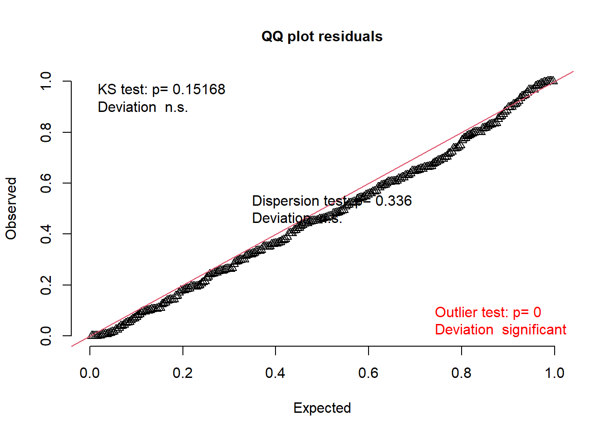
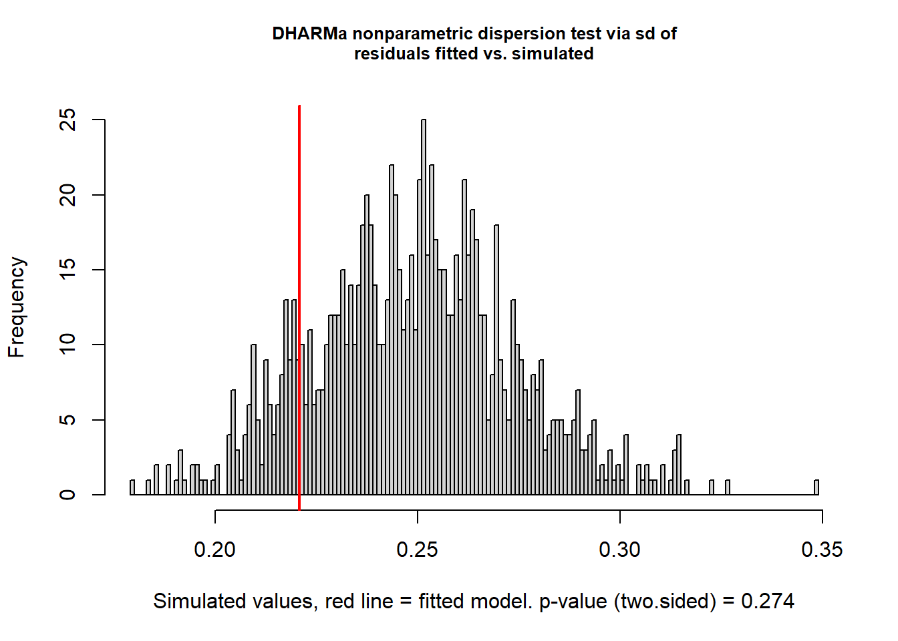
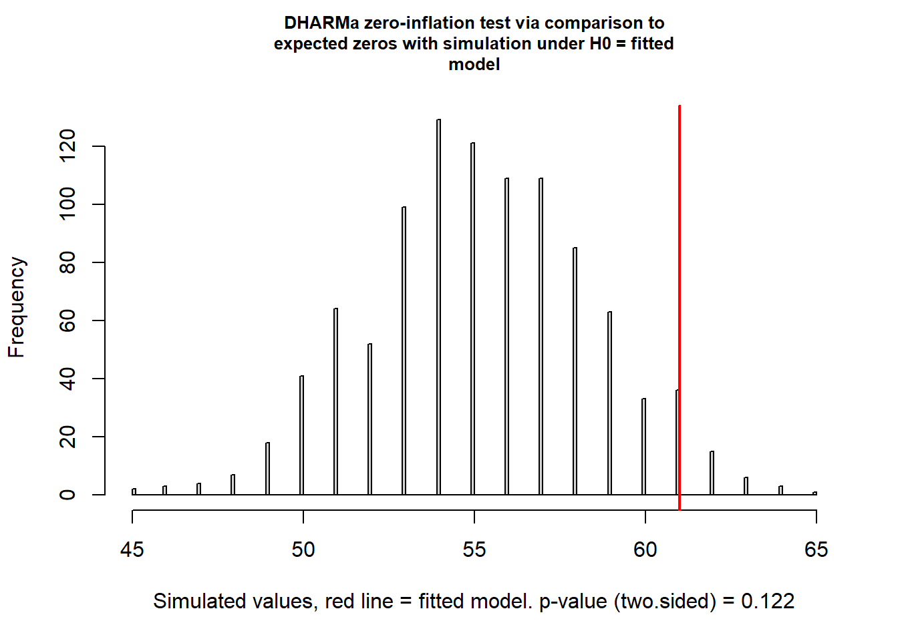
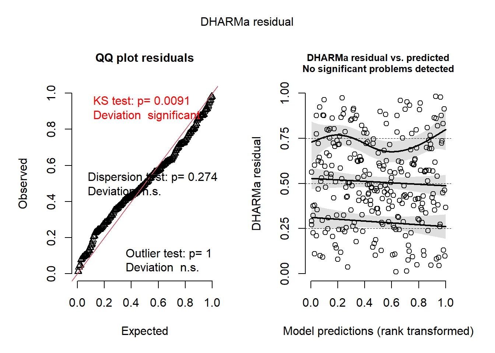
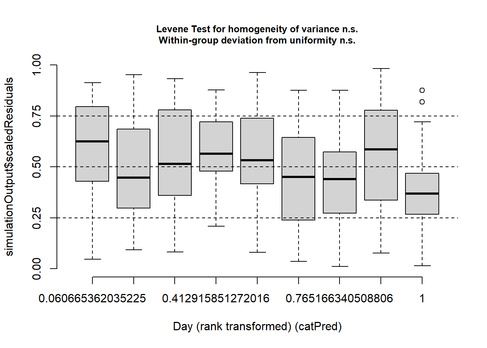
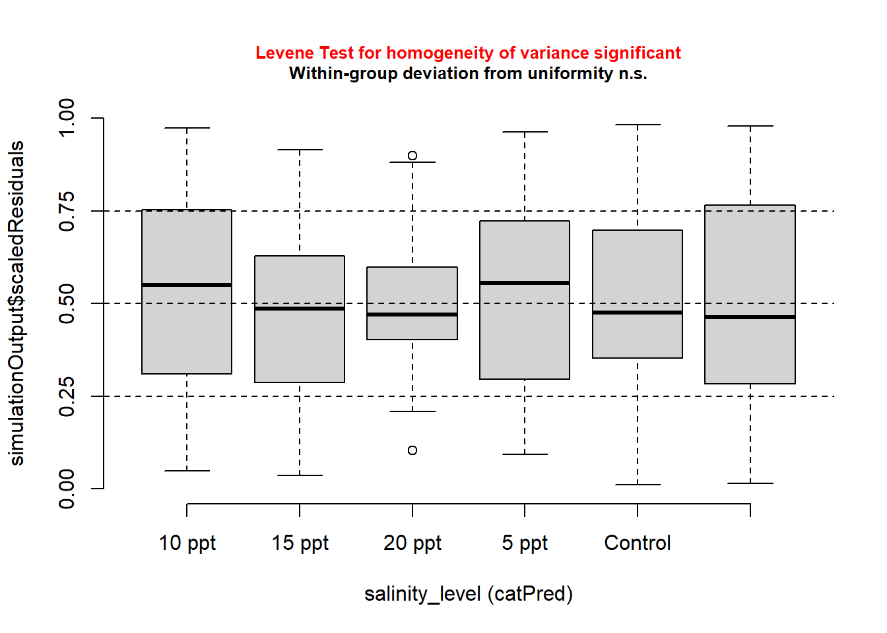
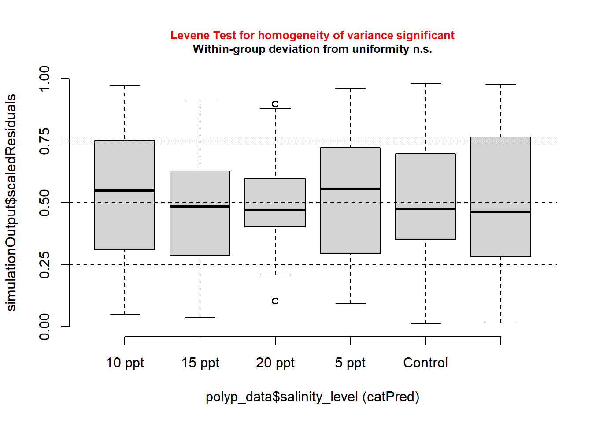
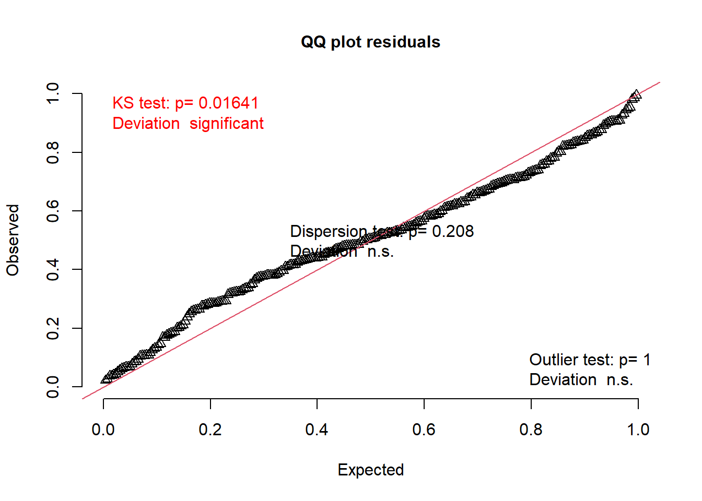
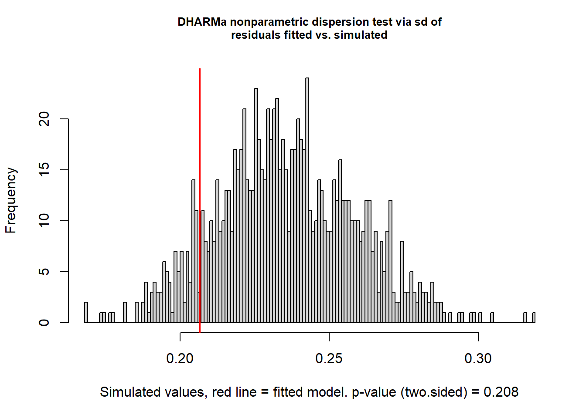
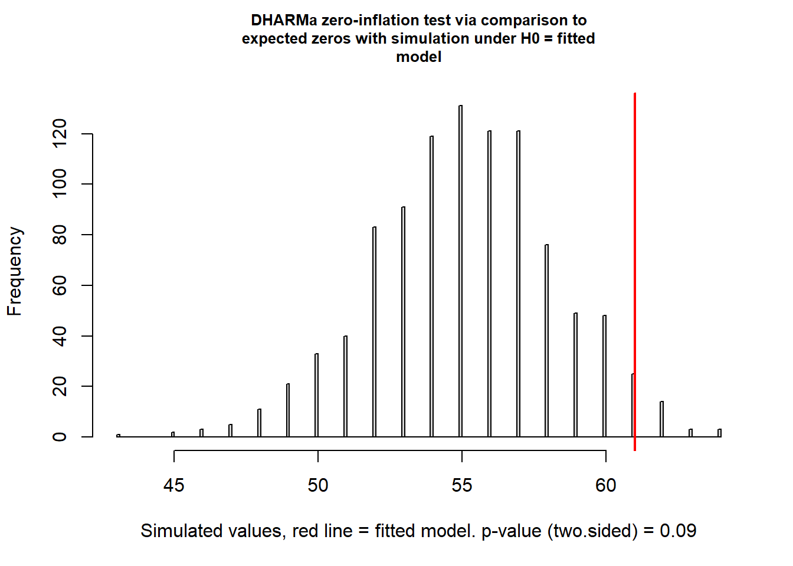

# load libaries
library(tidyverse)
library(glmmTMB)
library(DHARMa)Longitudinal Analysis of Polyp Abundance
Model Development and Selection
1 Aim
The objective of this analysis was to determine how polyp abundance changed throughout the experiment and whether temporal trajectories differed among salinity treatments.
Specifically, I wanted to ask:
How did polyp abundance change during exposure, salinity restoration, and post-recovery, and were these changes treatment dependent?
The analysis evolved through several model formulations as issues with overdispersion, zero inflation, complete separation and temporal structure became apparent.
1.1 Model development summary
| Model | Purpose | Outcome | Decision |
|---|---|---|---|
| M1 | Phase-based GLMM | Unstable estimates for 5 ppt due to complete absence of post-recovery polyps | Modified |
| M2 | Account for initial abundance | Same estimation problem remained | Modified |
| M3 | Piecewise slopes | Improved fit and reduced instability | Extended |
| M4 | Full phase-specific slopes | Post-recovery slope for 5 ppt not estimable because all observations were zero | Modified |
| M5 | Address non-estimable 5 ppt slope | Stable estimates and interpretable results | Preferred |
| M8 | Random-slope sensitivity | Similar conclusions | Sensitivity analysis |
2 Set up file
2.0.1 Load libraries
2.0.2 Load data
data <- readRDS("var/polyp_tidy.rds")
treatment_data <- readRDS("var/treatment_tidy.rds")
# combine into a single df for analysis
data <- data %>%
left_join(
treatment_data,
by = c(
"salinity_level" = "salinity_level",
"Day" = "Day"
)
)2.0.3 Data wrangle for analysis
polyp_data <- data %>%
group_by(salinity_level, replicate) %>%
mutate(
dead = replace_na(dead, 0), # replace empty cells with zeroes
# Initial population
initial_polyps = polyp_number[Day == 1][1]) %>% # create a new column with the initial polyp numbers
# budding ratio
mutate(
budding_ratio = if_else(
polyp_number > 0,
replace_na(buds, 0) / polyp_number,
NA_real_
)
) %>%
ungroup()
# Update polyp data
polyp_data <- polyp_data %>%
mutate(across(where(is.character), as.factor), # set factors
plot_day = Day - 2, # create a column for plotting the data that reflects the exposure day as Day Zero
replicate_id = interaction(salinity_level, replicate) # create unique ids for each replicate
)
# remove the baseline data for analysis
polyp_data <- polyp_data %>%
filter(Day > 1) %>%
droplevels()3 Data Exploration
3.1 Summary Statistics
polyp_data %>%
group_by(salinity_level) %>%
summarise(
Mean = mean(polyp_number, na.rm = TRUE),
Variance = var(polyp_number, na.rm = TRUE),
Zeros = sum(polyp_number == 0, na.rm = TRUE), # understand number of zeroes in case need to consider zero inflation factors during modelling.
Observations = n(),
.groups = "drop"
)# A tibble: 6 × 5
salinity_level Mean Variance Zeros Observations
<fct> <dbl> <dbl> <int> <int>
1 10 ppt 4.71 65.6 15 45
2 15 ppt 7.64 34.1 9 45
3 20 ppt 15.4 129. 0 45
4 5 ppt 0.644 3.14 37 45
5 Control 13.9 67.9 0 45
6 Procedural control 26.2 223. 0 45| Salinity Level | Mean | Variance | Zeros | Observations |
|---|---|---|---|---|
| 5 ppt | 0.64 | 3.14 | 37 | 45 |
| 10 ppt | 4.71 | 65.6 | 15 | 45 |
| 15 ppt | 7.64 | 34.1 | 9 | 45 |
| 20 ppt | 15.4 | 129 | 0 | 45 |
| Control | 13.9 | 67.9 | 0 | 45 |
| Procedural Control | 26.2 | 223 | 0 | 45 |
3.2 Initial Observations
In addition to the combination of fixed and random effects, the number of zeroes, and the repeated measures meant I wanted to look into GLMMs to properly model the data.
4 Initial Modelling Strategy
4.1 Model 1: Salinity × Phase GLMM
4.1.1 Objective
The first model treated the experiment as three discrete phases:
- Exposure
- Recovery
- Post-recovery
and tested whether treatment responses differed among phases.
Response variable is untransformed polyp numbers, as the glmm uses a poisson distribution with a log link. Poisson was chosen as polyp_number is a count.
Survival and relative abundance were not suitable as data for deaths was incomplete.
4.1.2 Model
m1 <- glmmTMB(
polyp_number ~ salinity_level * phase +
(1 | replicate_id),
family = poisson(link = "log"),
data = polyp_data)
summary(m1) Family: poisson ( log )
Formula: polyp_number ~ salinity_level * phase + (1 | replicate_id)
Data: polyp_data
AIC BIC logLik -2*log(L) df.resid
1391.0 1459.3 -676.5 1353.0 251
Random effects:
Conditional model:
Groups Name Variance Std.Dev.
replicate_id (Intercept) 0.7557 0.8693
Number of obs: 270, groups: replicate_id, 30
Conditional model:
Estimate Std. Error
(Intercept) 1.7115 0.4031
salinity_level15 ppt -0.3597 0.5758
salinity_level20 ppt 0.6444 0.5640
salinity_level5 ppt -1.6574 0.6042
salinity_levelControl 0.7742 0.5636
salinity_levelProcedural control 1.4027 0.5620
phasePost-Recovery -1.0745 0.1729
phaseRecovery -2.6150 0.4157
salinity_level15 ppt:phasePost-Recovery 1.4286 0.2114
salinity_level20 ppt:phasePost-Recovery 1.3288 0.1932
salinity_level5 ppt:phasePost-Recovery -18.1238 3219.1776
salinity_levelControl:phasePost-Recovery 1.1057 0.1956
salinity_levelProcedural control:phasePost-Recovery 1.0394 0.1857
salinity_level15 ppt:phaseRecovery 2.7234 0.4406
salinity_level20 ppt:phaseRecovery 2.7384 0.4276
salinity_level5 ppt:phaseRecovery -0.0241 1.0993
salinity_levelControl:phaseRecovery 2.6437 0.4284
salinity_levelProcedural control:phaseRecovery 2.6781 0.4222
z value Pr(>|z|)
(Intercept) 4.246 2.18e-05 ***
salinity_level15 ppt -0.625 0.53217
salinity_level20 ppt 1.142 0.25325
salinity_level5 ppt -2.743 0.00608 **
salinity_levelControl 1.374 0.16958
salinity_levelProcedural control 2.496 0.01256 *
phasePost-Recovery -6.213 5.19e-10 ***
phaseRecovery -6.291 3.15e-10 ***
salinity_level15 ppt:phasePost-Recovery 6.758 1.39e-11 ***
salinity_level20 ppt:phasePost-Recovery 6.877 6.09e-12 ***
salinity_level5 ppt:phasePost-Recovery -0.006 0.99551
salinity_levelControl:phasePost-Recovery 5.652 1.59e-08 ***
salinity_levelProcedural control:phasePost-Recovery 5.599 2.16e-08 ***
salinity_level15 ppt:phaseRecovery 6.182 6.35e-10 ***
salinity_level20 ppt:phaseRecovery 6.404 1.52e-10 ***
salinity_level5 ppt:phaseRecovery -0.022 0.98251
salinity_levelControl:phaseRecovery 6.172 6.76e-10 ***
salinity_levelProcedural control:phaseRecovery 6.343 2.26e-10 ***
---
Signif. codes: 0 '***' 0.001 '**' 0.01 '*' 0.05 '.' 0.1 ' ' 14.1.3 Diagnostics
simulationOutput <- simulateResiduals(fittedModel = m1, plot = FALSE)
plotQQunif(simulationOutput, testUniformity = TRUE, testOutliers = TRUE, testDispersion = TRUE)4.1.4 Interpretation
This model identified several significant treatment-by-phase interactions. However, coefficients associated with the 5 ppt treatment were unstable and had extremely large standard errors.
In addition, the diagnostics showed that there was significant issues with outliers, and the AIC value was quite large.
4.1.5 Conclusion
Although biologically sensible, the phase-based formulation failed to adequately handle the extreme behaviour of the 5 ppt treatment.
5 Accounting for Initial Polyp Abundance
5.1 Why Modify the Model?
Cultures differed in their starting abundance.
These differences may influence later abundance trajectories and therefore represent an important source of variation.
Rather than use an offset, I treated initial abundance as a covariate because abundance trajectories were not necessarily proportional to starting abundance.
5.2 Model 2
m2 <- glmmTMB(
polyp_number ~ salinity_level * phase +
log(initial_polyps) +
(1 | replicate_id),
family = poisson(link = "log"),
data = polyp_data)
summary(m2) Family: poisson ( log )
Formula:
polyp_number ~ salinity_level * phase + log(initial_polyps) +
(1 | replicate_id)
Data: polyp_data
AIC BIC logLik -2*log(L) df.resid
1383.2 1455.1 -671.6 1343.2 250
Random effects:
Conditional model:
Groups Name Variance Std.Dev.
replicate_id (Intercept) 0.4722 0.6872
Number of obs: 270, groups: replicate_id, 30
Conditional model:
Estimate Std. Error
(Intercept) -0.4146 0.6964
salinity_level15 ppt 0.1619 0.4834
salinity_level20 ppt 0.8113 0.4560
salinity_level5 ppt -1.7647 0.5010
salinity_levelControl 1.1735 0.4683
salinity_levelProcedural control 0.9849 0.4636
phasePost-Recovery -1.0745 0.1729
phaseRecovery -2.6150 0.4157
log(initial_polyps) 0.8593 0.2454
salinity_level15 ppt:phasePost-Recovery 1.4286 0.2114
salinity_level20 ppt:phasePost-Recovery 1.3288 0.1932
salinity_level5 ppt:phasePost-Recovery -18.3689 3638.9654
salinity_levelControl:phasePost-Recovery 1.1057 0.1956
salinity_levelProcedural control:phasePost-Recovery 1.0394 0.1857
salinity_level15 ppt:phaseRecovery 2.7234 0.4406
salinity_level20 ppt:phaseRecovery 2.7384 0.4276
salinity_level5 ppt:phaseRecovery -0.0241 1.0993
salinity_levelControl:phaseRecovery 2.6437 0.4284
salinity_levelProcedural control:phaseRecovery 2.6781 0.4222
z value Pr(>|z|)
(Intercept) -0.595 0.551618
salinity_level15 ppt 0.335 0.737728
salinity_level20 ppt 1.779 0.075186 .
salinity_level5 ppt -3.522 0.000428 ***
salinity_levelControl 2.506 0.012222 *
salinity_levelProcedural control 2.125 0.033623 *
phasePost-Recovery -6.213 5.19e-10 ***
phaseRecovery -6.291 3.15e-10 ***
log(initial_polyps) 3.501 0.000463 ***
salinity_level15 ppt:phasePost-Recovery 6.758 1.39e-11 ***
salinity_level20 ppt:phasePost-Recovery 6.877 6.09e-12 ***
salinity_level5 ppt:phasePost-Recovery -0.005 0.995972
salinity_levelControl:phasePost-Recovery 5.652 1.59e-08 ***
salinity_levelProcedural control:phasePost-Recovery 5.599 2.16e-08 ***
salinity_level15 ppt:phaseRecovery 6.182 6.35e-10 ***
salinity_level20 ppt:phaseRecovery 6.404 1.52e-10 ***
salinity_level5 ppt:phaseRecovery -0.022 0.982511
salinity_levelControl:phaseRecovery 6.172 6.76e-10 ***
salinity_levelProcedural control:phaseRecovery 6.343 2.26e-10 ***
---
Signif. codes: 0 '***' 0.001 '**' 0.01 '*' 0.05 '.' 0.1 ' ' 15.2.1 Diagnostics
simulationOutput2 <- simulateResiduals(fittedModel = m2, plot = FALSE)
plotQQunif(simulationOutput2, testUniformity = TRUE, testOutliers = TRUE, testDispersion = TRUE)
5.2.2 Interpretation
Initial abundance was a significant predictor of later abundance.
However:
- treatment effects remained largely unchanged,
- separation issues associated with the 5 ppt treatment persisted.
- AIC value improved but was still quite large.
5.2.3 Conclusion
Including starting abundance improved biological realism but did not resolve the underlying modelling problem.
6 Moving to a Piecewise Framework
6.1 Why Change the Temporal Structure?
The experiment was designed around three biologically distinct periods:
- Salinity exposure
- Salinity restoration
- Post-recovery
The phase model estimated differences among phases but not rates of change within each phase.
A piecewise framework would allow separate slopes to be estimated for each period.
7 Model 3: Piecewise Slopes
7.0.1 Data wrangle
# create variables for each phase
polyp_data <- polyp_data %>%
mutate(
t_exp = pmin(pmax(Day - 1, 0), 5), # time for exposure phase
t_rec = pmin(pmax(Day - 6, 0), 4), # time for recovery phase
t_post = pmax(Day - 10, 0) # time for post-recovery phase
)7.1 Model
m3 <- glmmTMB(
polyp_number ~
salinity_level * t_exp +
t_rec +
t_post +
log(initial_polyps) +
(1 | replicate_id),
family = poisson(link = "log"),
data = polyp_data)
summary(m3) Family: poisson ( log )
Formula:
polyp_number ~ salinity_level * t_exp + t_rec + t_post + log(initial_polyps) +
(1 | replicate_id)
Data: polyp_data
AIC BIC logLik -2*log(L) df.resid
1247.4 1305.0 -607.7 1215.4 254
Random effects:
Conditional model:
Groups Name Variance Std.Dev.
replicate_id (Intercept) 0.4722 0.6872
Number of obs: 270, groups: replicate_id, 30
Conditional model:
Estimate Std. Error z value Pr(>|z|)
(Intercept) 1.94458 0.71760 2.710 0.006731 **
salinity_level15 ppt -2.54594 0.56521 -4.504 6.66e-06 ***
salinity_level20 ppt -1.80209 0.51362 -3.509 0.000451 ***
salinity_level5 ppt 0.35191 0.81711 0.431 0.666701
salinity_levelControl -1.39741 0.52584 -2.657 0.007873 **
salinity_levelProcedural control -1.57321 0.50894 -3.091 0.001994 **
t_exp -0.76902 0.05613 -13.702 < 2e-16 ***
t_rec -0.01941 0.01947 -0.997 0.318734
t_post 0.03083 0.01712 1.801 0.071765 .
log(initial_polyps) 0.85928 0.24543 3.501 0.000463 ***
salinity_level15 ppt:t_exp 0.88376 0.07832 11.284 < 2e-16 ***
salinity_level20 ppt:t_exp 0.85435 0.06719 12.715 < 2e-16 ***
salinity_level5 ppt:t_exp -0.87861 0.27537 -3.191 0.001420 **
salinity_levelControl:t_exp 0.82164 0.06779 12.121 < 2e-16 ***
salinity_levelProcedural control:t_exp 0.81558 0.06218 13.116 < 2e-16 ***
---
Signif. codes: 0 '***' 0.001 '**' 0.01 '*' 0.05 '.' 0.1 ' ' 17.1.1 Interpretation
Model fit improved substantially.
The piecewise structure appeared to capture temporal dynamics more effectively than the phase-based model.
The problematic behaviour of the 5 ppt treatment was reduced.
7.1.2 Limitation
This model did not account for interactions or
7.1.3 Conclusion
The piecewise framework appeared preferable and warranted further development.
8 Compare the piecewise model with the phase based model.
8.1 Results
AIC(m2, m3) df AIC
m2 20 1383.152
m3 16 1247.410The AIC for the piecewise model was a lot better than the phase based model, but there is still room for improvement.
9 Model 4: Treatment-Specific Slopes in All Phases
9.1 Objective
Add in the interactions.
9.2 Model
m4 <- glmmTMB(
polyp_number ~
salinity_level * (t_exp + t_rec + t_post) +
log(initial_polyps) +
(1 | replicate_id),
family = poisson(link = "log"),
data = polyp_data)
summary(m4) Family: poisson ( log )
Formula:
polyp_number ~ salinity_level * (t_exp + t_rec + t_post) + log(initial_polyps) +
(1 | replicate_id)
Data: polyp_data
AIC BIC logLik -2*log(L) df.resid
1210.6 1304.2 -579.3 1158.6 244
Random effects:
Conditional model:
Groups Name Variance Std.Dev.
replicate_id (Intercept) 0.4722 0.6872
Number of obs: 270, groups: replicate_id, 30
Conditional model:
Estimate Std. Error z value Pr(>|z|)
(Intercept) 2.06686 0.73221 2.823 0.004761
salinity_level15 ppt -2.53370 0.59465 -4.261 2.04e-05
salinity_level20 ppt -1.79176 0.53973 -3.320 0.000901
salinity_level5 ppt 0.09868 0.93783 0.105 0.916198
salinity_levelControl -1.57173 0.55189 -2.848 0.004401
salinity_levelProcedural control -1.78517 0.53296 -3.350 0.000809
t_exp -0.82174 0.08468 -9.705 < 2e-16
t_rec -0.42465 0.14527 -2.923 0.003464
t_post 0.59580 0.11396 5.228 1.71e-07
log(initial_polyps) 0.85928 0.24543 3.501 0.000463
salinity_level15 ppt:t_exp 0.88699 0.10980 8.078 6.57e-16
salinity_level20 ppt:t_exp 0.85797 0.09742 8.807 < 2e-16
salinity_level5 ppt:t_exp -0.76464 0.34749 -2.200 0.027773
salinity_levelControl:t_exp 0.89363 0.09787 9.131 < 2e-16
salinity_levelProcedural control:t_exp 0.90149 0.09184 9.816 < 2e-16
salinity_level15 ppt:t_rec 0.39626 0.15630 2.535 0.011235
salinity_level20 ppt:t_rec 0.45699 0.15058 3.035 0.002407
salinity_level5 ppt:t_rec 0.74367 0.94571 0.786 0.431656
salinity_levelControl:t_rec 0.40693 0.15122 2.691 0.007125
salinity_levelProcedural control:t_rec 0.40287 0.14846 2.714 0.006656
salinity_level15 ppt:t_post -0.48175 0.12339 -3.904 9.45e-05
salinity_level20 ppt:t_post -0.57335 0.11896 -4.820 1.44e-06
salinity_level5 ppt:t_post -16.69726 3764.20692 -0.004 0.996461
salinity_levelControl:t_post -0.59908 0.12012 -4.987 6.13e-07
salinity_levelProcedural control:t_post -0.61633 0.11740 -5.250 1.52e-07
(Intercept) **
salinity_level15 ppt ***
salinity_level20 ppt ***
salinity_level5 ppt
salinity_levelControl **
salinity_levelProcedural control ***
t_exp ***
t_rec **
t_post ***
log(initial_polyps) ***
salinity_level15 ppt:t_exp ***
salinity_level20 ppt:t_exp ***
salinity_level5 ppt:t_exp *
salinity_levelControl:t_exp ***
salinity_levelProcedural control:t_exp ***
salinity_level15 ppt:t_rec *
salinity_level20 ppt:t_rec **
salinity_level5 ppt:t_rec
salinity_levelControl:t_rec **
salinity_levelProcedural control:t_rec **
salinity_level15 ppt:t_post ***
salinity_level20 ppt:t_post ***
salinity_level5 ppt:t_post
salinity_levelControl:t_post ***
salinity_levelProcedural control:t_post ***
---
Signif. codes: 0 '***' 0.001 '**' 0.01 '*' 0.05 '.' 0.1 ' ' 19.2.1 Interpretation
Fit improved further.
However, a major issue re-emerged:
salinity_level5 ppt:t_post
Estimate = -16.70
SE = 3764.21This occurred because all post-recovery observations in the 5 ppt treatment were zero.
The model was attempting to estimate a post-recovery trend despite complete absence of variation.
9.2.2 Conclusion
This model worked slightly better than the previous, but the 5ppt values are still causing issues.
10 Model 5: Addressing Complete Separation
10.1 Rationale
The instability in Model 4 was caused entirely by the 5 ppt treatment during post-recovery.
To improve the analysis for the post-recovery phase, the 5ppt values were removed.
10.1.1 Data wrangle
# remove 5ppt from the analysis
polyp_data <- polyp_data %>%
mutate(
post_10 = t_post * (salinity_level == "10 ppt"),
post_15 = t_post * (salinity_level == "15 ppt"),
post_20 = t_post * (salinity_level == "20 ppt"),
post_control =
t_post * (salinity_level == "Control"),
post_procedural =
t_post *
(salinity_level == "Procedural control")
)10.2 Model
m5 <- glmmTMB(
polyp_number ~
salinity_level * (t_exp + t_rec) +
post_10 +
post_15 +
post_20 +
post_control +
post_procedural +
log(initial_polyps) +
(1 | replicate_id),
family = poisson(link = "log"),
data = polyp_data)
summary(m5) Family: poisson ( log )
Formula:
polyp_number ~ salinity_level * (t_exp + t_rec) + post_10 + post_15 +
post_20 + post_control + post_procedural + log(initial_polyps) +
(1 | replicate_id)
Data: polyp_data
AIC BIC logLik -2*log(L) df.resid
1209.4 1299.3 -579.7 1159.4 245
Random effects:
Conditional model:
Groups Name Variance Std.Dev.
replicate_id (Intercept) 0.4722 0.6872
Number of obs: 270, groups: replicate_id, 30
Conditional model:
Estimate Std. Error z value Pr(>|z|)
(Intercept) 2.066875 0.732206 2.823 0.004761
salinity_level15 ppt -2.533688 0.594646 -4.261 2.04e-05
salinity_level20 ppt -1.791743 0.539733 -3.320 0.000901
salinity_level5 ppt -0.041114 0.908523 -0.045 0.963905
salinity_levelControl -1.571723 0.551887 -2.848 0.004401
salinity_levelProcedural control -1.785192 0.532959 -3.350 0.000809
t_exp -0.821742 0.084676 -9.705 < 2e-16
t_rec -0.424658 0.145268 -2.923 0.003464
post_10 0.595806 0.113964 5.228 1.71e-07
post_15 0.114053 0.047298 2.411 0.015893
post_20 0.022457 0.034110 0.658 0.510310
post_control -0.003277 0.037972 -0.086 0.931221
post_procedural -0.020529 0.028189 -0.728 0.466453
log(initial_polyps) 0.859272 0.245429 3.501 0.000463
salinity_level15 ppt:t_exp 0.886986 0.109800 8.078 6.57e-16
salinity_level20 ppt:t_exp 0.857970 0.097421 8.807 < 2e-16
salinity_level5 ppt:t_exp -0.699559 0.328640 -2.129 0.033284
salinity_levelControl:t_exp 0.893629 0.097870 9.131 < 2e-16
salinity_levelProcedural control:t_exp 0.901489 0.091841 9.816 < 2e-16
salinity_level15 ppt:t_rec 0.396264 0.156297 2.535 0.011234
salinity_level20 ppt:t_rec 0.456992 0.150583 3.035 0.002407
salinity_level5 ppt:t_rec 0.047929 0.654229 0.073 0.941599
salinity_levelControl:t_rec 0.406932 0.151222 2.691 0.007125
salinity_levelProcedural control:t_rec 0.402876 0.148464 2.714 0.006655
(Intercept) **
salinity_level15 ppt ***
salinity_level20 ppt ***
salinity_level5 ppt
salinity_levelControl **
salinity_levelProcedural control ***
t_exp ***
t_rec **
post_10 ***
post_15 *
post_20
post_control
post_procedural
log(initial_polyps) ***
salinity_level15 ppt:t_exp ***
salinity_level20 ppt:t_exp ***
salinity_level5 ppt:t_exp *
salinity_levelControl:t_exp ***
salinity_levelProcedural control:t_exp ***
salinity_level15 ppt:t_rec *
salinity_level20 ppt:t_rec **
salinity_level5 ppt:t_rec
salinity_levelControl:t_rec **
salinity_levelProcedural control:t_rec **
---
Signif. codes: 0 '***' 0.001 '**' 0.01 '*' 0.05 '.' 0.1 ' ' 110.3 Interpretation
This model no longer had the 5ppt issues, and results are clear. AIC is still high at 1210.
10.3.1 Conclusion
Model 5 was retained as the principal candidate model.
11 Diagnostic Assessment of Model 5
Run diagnostics to check assumptions.
11.1 Model convergence
m5$fit$convergence[1] 0m5$sdr$pdHess[1] TRUE11.2 Residual Diagnostics
res_5 <- simulateResiduals(
fittedModel = m5,
n = 1000
)11.2.1 Dispersion
testDispersion(res_5)
DHARMa nonparametric dispersion test via sd of residuals fitted vs.
simulated
data: simulationOutput
dispersion = 0.88655, p-value = 0.274
alternative hypothesis: two.sidedInterpretation:
- No evidence of overdispersion.
11.2.2 Zero Inflation
testZeroInflation(res_5)
DHARMa zero-inflation test via comparison to expected zeros with
simulation under H0 = fitted model
data: simulationOutput
ratioObsSim = 1.1046, p-value = 0.122
alternative hypothesis: two.sidedInterpretation:
- No evidence of excess zero inflation.
11.2.3 Uniformity
testUniformity(res_5)
Asymptotic one-sample Kolmogorov-Smirnov test
data: simulationOutput$scaledResiduals
D = 0.099934, p-value = 0.009098
alternative hypothesis: two-sidedInterpretation:
- Some residual lack of fit remained.
11.3 Diagnostic Plots
plot(res_5)
11.4 Heterogeneity of Variance
Levene’s test indicated heterogeneity among treatments.
plotResiduals(
res_5,
form = polyp_data$Day
)
plotResiduals(
res_5,
form = polyp_data$salinity_level
)
testCategorical(
res_5,
catPred = polyp_data$salinity_level
)
$uniformity
$uniformity$details
catPred: 10 ppt
Exact one-sample Kolmogorov-Smirnov test
data: dd[x, ]
D = 0.10269, p-value = 0.6913
alternative hypothesis: two-sided
------------------------------------------------------------
catPred: 15 ppt
Exact one-sample Kolmogorov-Smirnov test
data: dd[x, ]
D = 0.13216, p-value = 0.3783
alternative hypothesis: two-sided
------------------------------------------------------------
catPred: 20 ppt
Exact one-sample Kolmogorov-Smirnov test
data: dd[x, ]
D = 0.21622, p-value = 0.02513
alternative hypothesis: two-sided
------------------------------------------------------------
catPred: 5 ppt
Exact one-sample Kolmogorov-Smirnov test
data: dd[x, ]
D = 0.12073, p-value = 0.4908
alternative hypothesis: two-sided
------------------------------------------------------------
catPred: Control
Exact one-sample Kolmogorov-Smirnov test
data: dd[x, ]
D = 0.12421, p-value = 0.4549
alternative hypothesis: two-sided
------------------------------------------------------------
catPred: Procedural control
Exact one-sample Kolmogorov-Smirnov test
data: dd[x, ]
D = 0.079366, p-value = 0.918
alternative hypothesis: two-sided
$uniformity$p.value
[1] 0.69125622 0.37834169 0.02512896 0.49076545 0.45485725 0.91797502
$uniformity$p.value.cor
[1] 1.0000000 1.0000000 0.1507738 1.0000000 1.0000000 1.0000000
$homogeneity
Levene's Test for Homogeneity of Variance (center = median)
Df F value Pr(>F)
group 5 3.7995 0.002434 **
264
---
Signif. codes: 0 '***' 0.001 '**' 0.01 '*' 0.05 '.' 0.1 ' ' 111.4.1 Follow-up Analysis
I attempted to model treatment-specific dispersion.
11.4.2 Outcome
Model fit and diagnostics were not improved.
11.4.3 Decision
Retain the simpler formulation.
12 Temporal Autocorrelation
12.1 Question
Do repeated observations within replicates show evidence of temporal autocorrelation?
12.2 Results
replicate_ids <- unique(polyp_data$replicate_id)
autocorrelation_results <- lapply(
replicate_ids,
function(id) {
idx <- which(
polyp_data$replicate_id == id
)
# Extract residuals for this replicate
res_subset <- recalculateResiduals(
res_5,
sel = idx
)
# Test temporal autocorrelation
testTemporalAutocorrelation(
res_subset,
time = polyp_data$Day[idx],
plot = FALSE
)
}
)
# Extract p-values
acf_pvalues <- sapply(
autocorrelation_results,
function(x) x$p.value
)
summary(acf_pvalues) Min. 1st Qu. Median Mean 3rd Qu. Max.
0.0001422 0.2188826 0.3782730 0.4546360 0.6694392 0.9964821 The median is 0.378 showing that there is no autocorrelation. however the min is 0.0001 indicating there is some autocorrelation happening.
Conducted tests to disccover how many and which ones.
# Number of significant tests
sum(acf_pvalues < 0.05, na.rm = TRUE)[1] 1# Proportion of significant tests
mean(acf_pvalues < 0.05, na.rm = TRUE)[1] 0.03333333# Identify affected replicates
data.frame(
replicate_id = replicate_ids,
p_value = acf_pvalues
) %>%
filter(p_value < 0.05) replicate_id p_value
1 Procedural control.2 0.0001422266# Adjust p-values for multiple testing
acf_adjusted <- p.adjust(
acf_pvalues,
method = "BH"
)
# Create summary table
acf_results <- data.frame(
replicate_id = replicate_ids,
p_value = acf_pvalues,
adjusted_p = acf_adjusted
)
# Display smallest p-values
acf_results %>%
arrange(p_value) %>%
print() replicate_id p_value adjusted_p
1 Procedural control.2 0.0001422266 0.004266797
2 15 ppt.2 0.0607132262 0.723318498
3 20 ppt.3 0.0725723623 0.723318498
4 Control.4 0.1222171264 0.723318498
5 Procedural control.3 0.1378185693 0.723318498
6 15 ppt.4 0.1810139762 0.723318498
7 15 ppt.5 0.1974292728 0.723318498
8 20 ppt.2 0.2028738483 0.723318498
9 Procedural control.1 0.2669089002 0.723318498
10 Control.2 0.3016385572 0.723318498
11 15 ppt.1 0.3022784613 0.723318498
12 Control.3 0.3114727479 0.723318498
13 5 ppt.4 0.3412260028 0.723318498
14 Procedural control.4 0.3566708420 0.723318498
15 20 ppt.4 0.3707761185 0.723318498
16 15 ppt.3 0.3857698654 0.723318498
17 20 ppt.1 0.4624278065 0.816049070
18 5 ppt.2 0.5832607070 0.882367827
19 10 ppt.1 0.5840669964 0.882367827
20 20 ppt.5 0.5900630184 0.882367827
21 5 ppt.1 0.6182907240 0.882367827
22 10 ppt.5 0.6483109657 0.882367827
23 5 ppt.3 0.6764820005 0.882367827
24 10 ppt.2 0.7188492847 0.895178878
25 Control.5 0.7527572248 0.895178878
26 Procedural control.5 0.7960354126 0.895178878
27 5 ppt.5 0.8056609899 0.895178878
28 10 ppt.4 0.8736209962 0.936022496
29 Control.1 0.9212502285 0.953017478
30 10 ppt.3 0.9964821482 0.996482148# Number remaining significant
sum(acf_adjusted < 0.05, na.rm = TRUE)[1] 1Only one replicate showed evidence of significant autocorrelation following correction for multiple testing.
12.2.1 Significant Replicate
- Procedural Control 2
12.2.2 Interpretation
Temporal autocorrelation does not appear to be a widespread feature of the dataset.
13 Sensitivity Analysis: Removing the Influential Replicate
13.1 Rationale
Because Procedural Control 2 showed evidence of temporal autocorrelation, I assessed whether it was disproportionately influencing model results.
13.2 Model
m7 <- update(
m5,
data = polyp_data %>%
filter(
as.character(replicate_id) !=
"Procedural control.2"
) %>%
droplevels())
summary(m7) Family: poisson ( log )
Formula:
polyp_number ~ salinity_level * (t_exp + t_rec) + post_10 + post_15 +
post_20 + post_control + post_procedural + log(initial_polyps) +
(1 | replicate_id)
Data:
polyp_data %>% filter(as.character(replicate_id) != "Procedural control.2") %>%
droplevels()
AIC BIC logLik -2*log(L) df.resid
1150.2 1239.3 -550.1 1100.2 236
Random effects:
Conditional model:
Groups Name Variance Std.Dev.
replicate_id (Intercept) 0.4947 0.7033
Number of obs: 261, groups: replicate_id, 29
Conditional model:
Estimate Std. Error z value Pr(>|z|)
(Intercept) 2.119303 0.759765 2.789 0.00528
salinity_level15 ppt -2.551559 0.603773 -4.226 2.38e-05
salinity_level20 ppt -1.795557 0.548233 -3.275 0.00106
salinity_level5 ppt -0.041792 0.913851 -0.046 0.96352
salinity_levelControl -1.581137 0.561176 -2.818 0.00484
salinity_levelProcedural control -1.793392 0.575817 -3.115 0.00184
t_exp -0.821743 0.084676 -9.705 < 2e-16
t_rec -0.424649 0.145267 -2.923 0.00346
post_10 0.595802 0.113963 5.228 1.71e-07
post_15 0.114053 0.047298 2.411 0.01589
post_20 0.022456 0.034110 0.658 0.51031
post_control -0.003277 0.037972 -0.086 0.93122
post_procedural -0.017246 0.028914 -0.596 0.55086
log(initial_polyps) 0.837880 0.257245 3.257 0.00113
salinity_level15 ppt:t_exp 0.886990 0.109800 8.078 6.57e-16
salinity_level20 ppt:t_exp 0.857970 0.097421 8.807 < 2e-16
salinity_level5 ppt:t_exp -0.699552 0.328639 -2.129 0.03328
salinity_levelControl:t_exp 0.893631 0.097870 9.131 < 2e-16
salinity_levelProcedural control:t_exp 0.914612 0.092725 9.864 < 2e-16
salinity_level15 ppt:t_rec 0.396254 0.156296 2.535 0.01124
salinity_level20 ppt:t_rec 0.456985 0.150582 3.035 0.00241
salinity_level5 ppt:t_rec 0.047903 0.654240 0.073 0.94163
salinity_levelControl:t_rec 0.406924 0.151221 2.691 0.00713
salinity_levelProcedural control:t_rec 0.415296 0.148699 2.793 0.00522
(Intercept) **
salinity_level15 ppt ***
salinity_level20 ppt **
salinity_level5 ppt
salinity_levelControl **
salinity_levelProcedural control **
t_exp ***
t_rec **
post_10 ***
post_15 *
post_20
post_control
post_procedural
log(initial_polyps) **
salinity_level15 ppt:t_exp ***
salinity_level20 ppt:t_exp ***
salinity_level5 ppt:t_exp *
salinity_levelControl:t_exp ***
salinity_levelProcedural control:t_exp ***
salinity_level15 ppt:t_rec *
salinity_level20 ppt:t_rec **
salinity_level5 ppt:t_rec
salinity_levelControl:t_rec **
salinity_levelProcedural control:t_rec **
---
Signif. codes: 0 '***' 0.001 '**' 0.01 '*' 0.05 '.' 0.1 ' ' 113.3 Diagnostics
# Repeat DHARMa diagnostics
set.seed(123)
res_7 <- simulateResiduals(
m7,
n = 1000
)
testUniformity(res_7)
Asymptotic one-sample Kolmogorov-Smirnov test
data: simulationOutput$scaledResiduals
D = 0.095922, p-value = 0.01641
alternative hypothesis: two-sidedtestDispersion(res_7)
DHARMa nonparametric dispersion test via sd of residuals fitted vs.
simulated
data: simulationOutput
dispersion = 0.87652, p-value = 0.208
alternative hypothesis: two.sidedtestZeroInflation(res_7)
DHARMa zero-inflation test via comparison to expected zeros with
simulation under H0 = fitted model
data: simulationOutput
ratioObsSim = 1.1061, p-value = 0.09
alternative hypothesis: two.sided13.4 Interpretation
Diagnostic results were essentially unchanged.
13.4.1 Conclusion
The primary findings do not appear to depend on a single influential replicate, so this replicate should be retained in the model.
14 Model 8: Random-Slope Sensitivity Analysis
14.1 Rationale
Model 5 assumed replicates differed only in intercept.
A random-slope model allows replicates to have different temporal trajectories.
14.2 Model
# Centre and scale experimental day
polyp_data <- polyp_data %>%
mutate(
Day_scaled = (Day - mean(Day)) / sd(Day)
)
m8 <- glmmTMB(
polyp_number ~
salinity_level * (t_exp + t_rec) +
post_10 +
post_15 +
post_20 +
post_control +
post_procedural +
log(initial_polyps) +
(1 + Day_scaled | replicate_id),
family = poisson(link = "log"),
data = polyp_data)
summary(m8) Family: poisson ( log )
Formula:
polyp_number ~ salinity_level * (t_exp + t_rec) + post_10 + post_15 +
post_20 + post_control + post_procedural + log(initial_polyps) +
(1 + Day_scaled | replicate_id)
Data: polyp_data
AIC BIC logLik -2*log(L) df.resid
1202.2 1299.4 -574.1 1148.2 243
Random effects:
Conditional model:
Groups Name Variance Std.Dev. Corr
replicate_id (Intercept) 0.53256 0.7298
Day_scaled 0.01479 0.1216 1.00
Number of obs: 270, groups: replicate_id, 30
Conditional model:
Estimate Std. Error z value Pr(>|z|)
(Intercept) 2.812042 0.593662 4.737 2.17e-06
salinity_level15 ppt -2.562029 0.511741 -5.006 5.54e-07
salinity_level20 ppt -1.853381 0.450598 -4.113 3.90e-05
salinity_level5 ppt -0.011861 0.854966 -0.014 0.988932
salinity_levelControl -1.770954 0.461075 -3.841 0.000123
salinity_levelProcedural control -1.708305 0.438053 -3.900 9.63e-05
t_exp -0.842523 0.086200 -9.774 < 2e-16
t_rec -0.447907 0.146235 -3.063 0.002192
post_10 0.567864 0.115478 4.918 8.77e-07
post_15 0.078272 0.050759 1.542 0.123068
post_20 0.009129 0.037194 0.245 0.806103
post_control -0.006744 0.040579 -0.166 0.867997
post_procedural -0.029765 0.031684 -0.939 0.347497
log(initial_polyps) 0.597825 0.190023 3.146 0.001655
salinity_level15 ppt:t_exp 0.877435 0.111793 7.849 4.20e-15
salinity_level20 ppt:t_exp 0.867476 0.099565 8.713 < 2e-16
salinity_level5 ppt:t_exp -0.695393 0.329265 -2.112 0.034690
salinity_levelControl:t_exp 0.911438 0.100074 9.108 < 2e-16
salinity_levelProcedural control:t_exp 0.914914 0.094160 9.717 < 2e-16
salinity_level15 ppt:t_rec 0.386952 0.157715 2.453 0.014148
salinity_level20 ppt:t_rec 0.468211 0.152018 3.080 0.002070
salinity_level5 ppt:t_rec 0.036602 0.652900 0.056 0.955294
salinity_levelControl:t_rec 0.427039 0.152714 2.796 0.005169
salinity_levelProcedural control:t_rec 0.418126 0.149942 2.789 0.005294
(Intercept) ***
salinity_level15 ppt ***
salinity_level20 ppt ***
salinity_level5 ppt
salinity_levelControl ***
salinity_levelProcedural control ***
t_exp ***
t_rec **
post_10 ***
post_15
post_20
post_control
post_procedural
log(initial_polyps) **
salinity_level15 ppt:t_exp ***
salinity_level20 ppt:t_exp ***
salinity_level5 ppt:t_exp *
salinity_levelControl:t_exp ***
salinity_levelProcedural control:t_exp ***
salinity_level15 ppt:t_rec *
salinity_level20 ppt:t_rec **
salinity_level5 ppt:t_rec
salinity_levelControl:t_rec **
salinity_levelProcedural control:t_rec **
---
Signif. codes: 0 '***' 0.001 '**' 0.01 '*' 0.05 '.' 0.1 ' ' 114.3 Compare models
AIC(m5, m8) df AIC
m5 25 1209.385
m8 27 1202.24914.4 Interpretation
The random-slope model improved fit modestly.
However:
- treatment estimates were largely unchanged,
- biological conclusions were unchanged,
- residual issues remained,
- random-effect correlations approached the boundary.
14.4.1 Conclusion
The additional complexity did not change the interpretation..
15 Biological Conclusions Across Models
A key objective was to determine whether conclusions were robust across alternative modelling approaches.
15.1 Consistent Findings
15.1.1 Exposure Phase
- Polyp abundance declined most rapidly in the 5 ppt treatment.
- Polyp abundance also declined substantially in the 10 ppt treatment.
15.1.2 Recovery Phase
- The 10 ppt treatment continued to exhibit a more negative trajectory than the controls.
15.1.3 Post-Recovery Phase
- The 10 ppt treatment exhibited the strongest increase in abundance.
These patterns were observed consistently across model specifications.
16 Leave-One-Replicate-Out Sensitivity Analysis
To assess robustness, a leave-one-replicate-out analysis was conducted.
16.1 Findings
- All models converged successfully.
- Recovery-phase slope differences remained negative in all refits.
- Estimates ranged from −0.464 to −0.350.
- Twenty-seven of thirty refits remained significant.
16.2 Interpretation
The direction of the treatment effect was highly robust.
Statistical significance showed moderate sensitivity to exclusion of individual cultures.
17 Final Model Selection
17.1 Preferred Model
Model 5 was selected as the primary model for interpretation.
17.2 Justification
Model 5:
- produced stable estimates,
- avoided problems caused by complete mortality in the 5 ppt treatment,
- showed acceptable dispersion and zero-inflation diagnostics,
- retained biological interpretability,
- was supported by sensitivity analyses,
- produced conclusions broadly consistent with more complex alternatives.
Although Model 8 achieved a slightly lower AIC, the increase in complexity did not substantially alter biological conclusions.
Therefore, Model 5 was considered the most parsimonious and interpretable representation of the data.
18 Questions for Discussion
Do you agree that model 5 is the most appropirate?
Should the residual heterogeneity be considered sufficiently minor to proceed with analysis?
How should I deal with the complete collapse of the 5 ppt treatment ?
Should model 8 be presented as a formal sensitivity analysis or moved to supplementary material?
Are there any other checks or tests I should do?